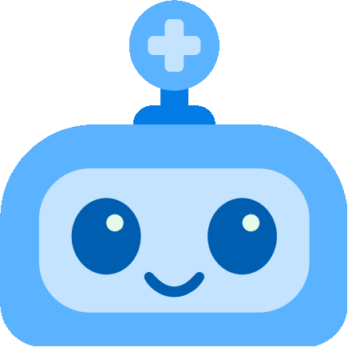

정현님 안녕하세요!
오늘의 인바디가 업데이트되었어요.
걸음 수 6,356보
오늘의 저녁 메뉴 추천

현재 재료를 바탕으로 추천드리는
저녁메뉴는 [두부 샐러드 조림] 입니다.
부족한 재료 1개: 발사믹 소스
도움이 필요하시면
[ 헬 ]을 불러주세요!

무엇이든
부탁하세요.
부탁하세요.


현재 식재료로 가능한 저녁메뉴는
[ 토마토 계란 볶음 ] 입니다.
[ 토마토 계란 볶음 ] 입니다.
부족한 재료 : 없음

현재 식재료로 가능한 저녁메뉴는
[ 두부 유부 초밥 ] 입니다.
[ 두부 유부 초밥 ] 입니다.
부족한 재료 : 발사믹 소스

요리하실 때 도움이 필요하면
언제든 불러주세요!
언제든 불러주세요!
듣는 중…